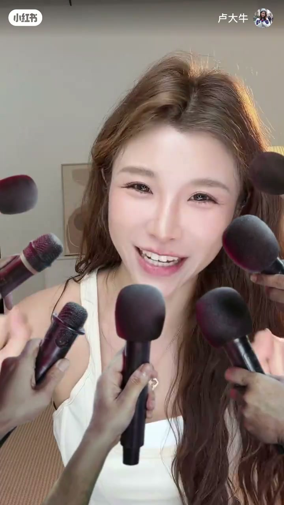
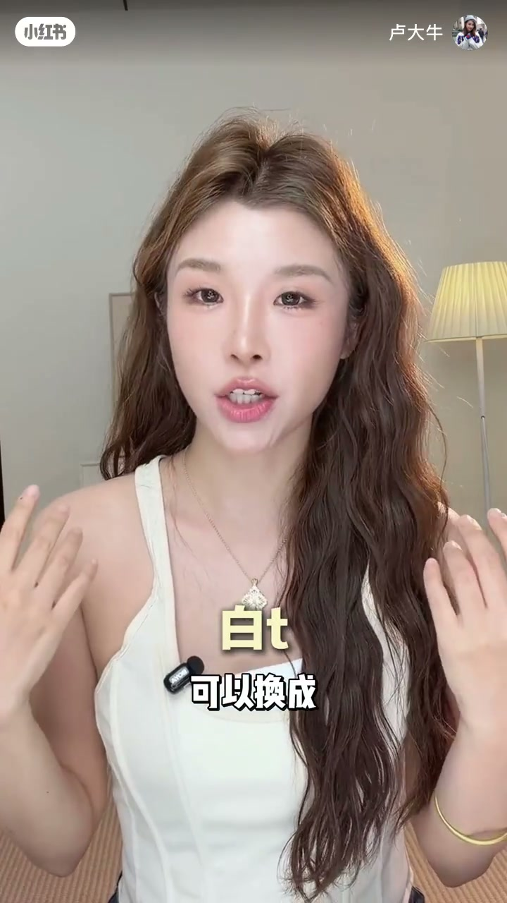
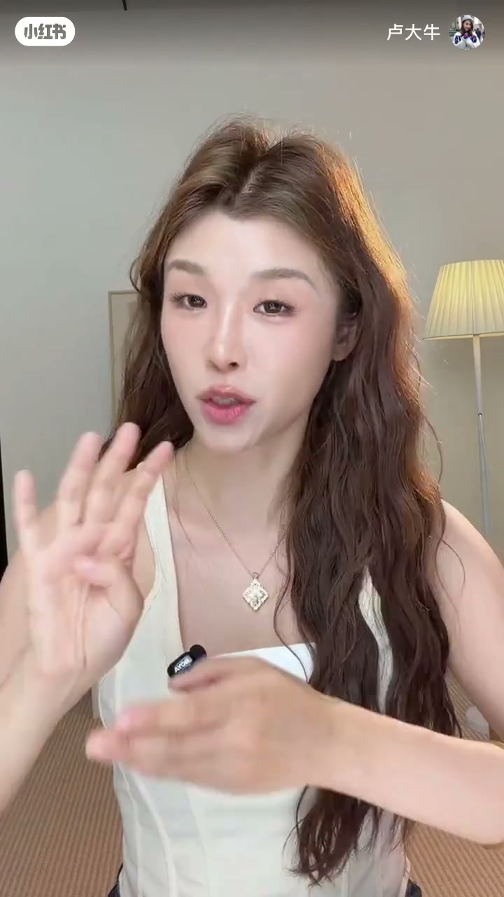
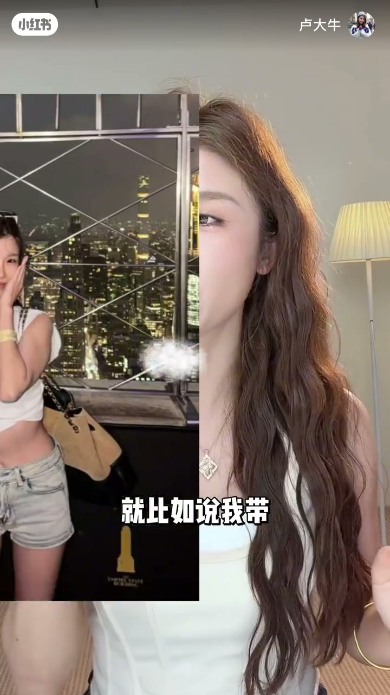
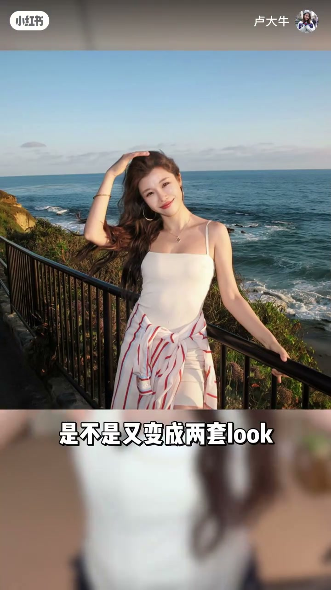
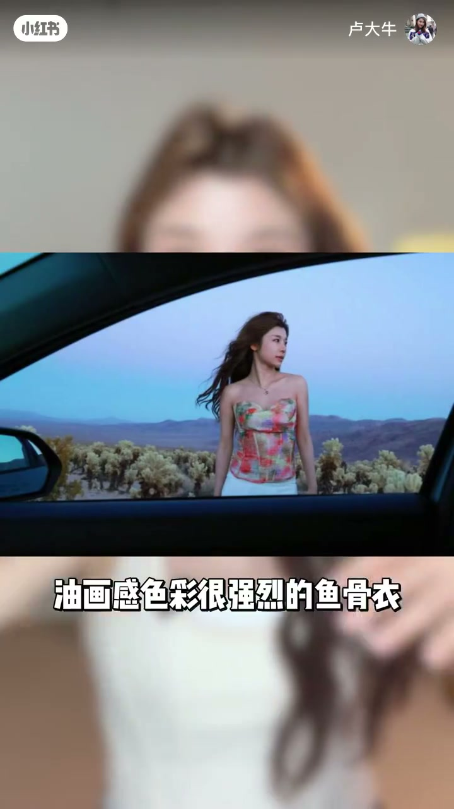
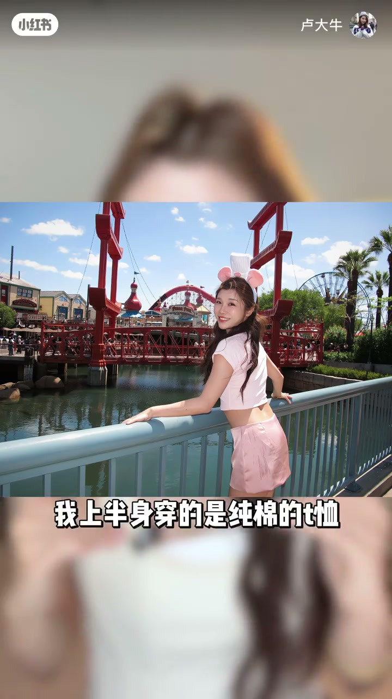
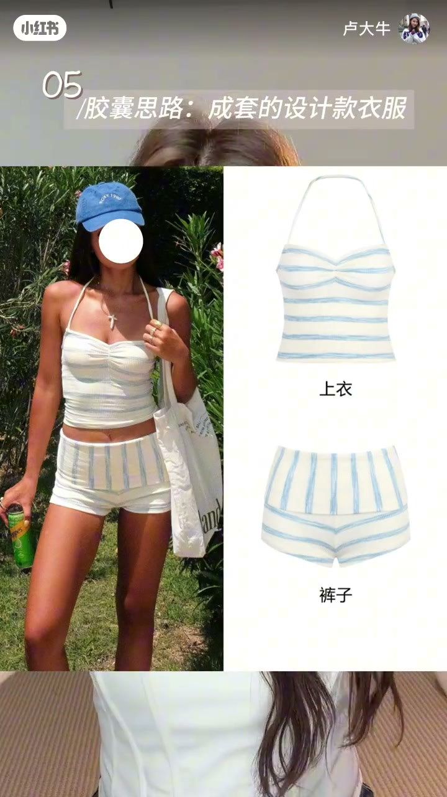
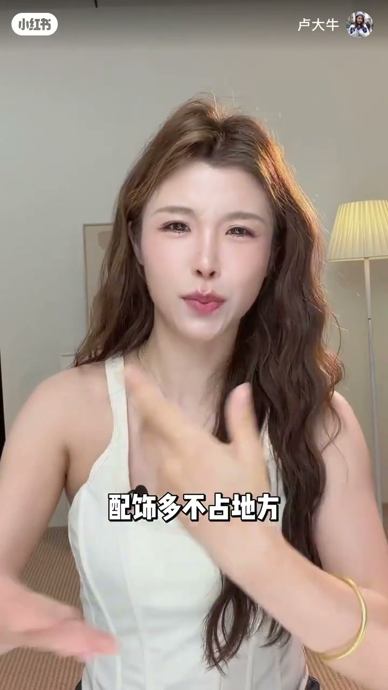
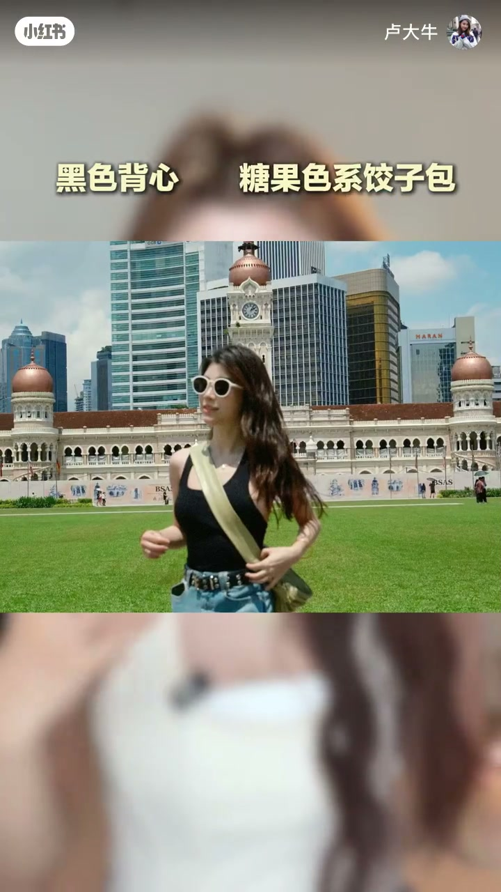

内容要点
一支 3 分钟的旅行穿搭指南：作者带着「带最少的衣服、出最多的片」的目标，讲透六套出行穿搭思路——小设计基础款互相切换、基础款内搭配彩色罩衫、纯色基础加亮色设计款、统一色调但不同材质、直接买成套设计感衣服、基础款靠夸张配饰撑起造型。每套思路都有具体单品和搭配演示，照着收拾行李箱就能用。
知识结构
白T换无袖款、蛋糕领款、船领款，白背心换鱼骨款，黑背心换交叉大露背连体款；下半身全带基础款，就能衍生出多套 look。
裸色包臀裙外搭彩色条纹衬衫，罩上身或围下身变两套 look；白色上衣叠黑色小罩衫当披肩，增加层次。
油画感鱼骨衣配白短裙或基础牛仔裤，明艳但不「精致土」。
粉色纯棉T恤配缎面短裙，或配亮片裙，有对比感又和谐好看。
纯色基础款套装省心不用搭配；设计感套装可上下拆开与其他颜色混搭出 double look。
民族风大包、小双肩包、糖果色饺子包、耳饰发圈帽子丝巾皮带复古耳机，用夸张配饰撑起整套 look。
带最少衣服出片的本质是「每件单品都能复搭」：基础款负责保底，设计款负责出彩，配饰负责点睛。六个思路层层递进，一件白衬衣也能纯靠配饰撑起一套造型。
00:00-00:38思路一：小设计基础款任意切换
00:00视频开场，作者直接抛出命题：这么一箱衣服，怎么让她出去玩了十多天、拍了十多套 look？00:10第一个思路是「有小设计的基础款＋基础款」任意切换。以白T为例，可以换成无袖款、蛋糕领款、船领款；白背心换成鱼骨白背心，黑色背心换成交叉大露背的连体背心。


00:25下半身全部带基础款——长牛仔裤、阔腿牛仔裤、短牛仔裤、短牛仔包臀裙，就能衍生出很多套 look，一身显得简约又有质感。00:35关键理由：这种基础款太不占地方，行李箱轻轻松松。

00:38-01:07思路二：基础款内搭 + 彩色罩衫
00:38第二个思路被作者称作「我的命」：带基础款内搭，加一件色彩强烈的罩衫。比如裸色基础的包臀裙，外面搭配一件彩色条纹衬衫；这件衬衫罩在上半身是一种穿法，围在下半身又是一种穿法，一件单品瞬间变两套 look。

00:58白色上衣叠穿一件黑色小罩衫，可以当披肩增加层次感；黑色罩衫单穿又是一套 look。

01:07-01:19思路三：纯色基础 + 亮色设计款
00:67第三个思路是纯色基础加亮色设计款：一件油画感很强、很有设计感的鱼骨衣，下面简单穿白色短裙或基础牛仔裤，明艳又不会显得「精致土」。

01:19-01:36思路四：统一色调，不同材质
00:79第四个思路是统一色调但不同材质。比如这套粉色 look：上半身穿纯棉T恤，下半身穿缎面短裙——材质对比制造「心机」；粉色短袖下面还搭配过亮片裙。既有微微的对比感，搭配起来又和谐又好看。

01:36-02:03思路五：成套设计感衣服
00:96再下一个思路，是直接去买成套的设计感衣服。纯色的基础款套装简直「香饽饽」——不需要再搭配，超级简单就能撑起完整造型；或者选这类很有设计感但耐看的套装，比如千篇一律的挂脖背心套装，可以加一点镂空的设计，还能上下拆开，跟其他颜色的单品乱搭出 double look。

02:03-02:57思路六：基础款靠配饰撑起
00:123最后一个思路：基础款多利用配饰。配饰不占地方，可以多带点，用一个夸张的配饰去撑起整套 look。比如这两年很火的民族风大包——反正旅行本身就要带大容量包，选个有设计感的就一举两得；想做学院风，就配小一点的双肩包。

00:144最简单的黑色背心，可以搭配一个糖果色系的饺子包。

00:149还可以用大耳饰、发圈、头饰、墨镜、腰带、复古耳机、有造型感的帽子、带 logo 的丝巾撑起造型。比如这套白衬衣「清汤寡水」，纯靠配饰撑起来；黑色背心加金属感皮带，更增加运动健康的感觉。00:167复古耳机在网上（作者提到拼多多）搜一大堆，很便宜——皮带还能戴在额头、挂在脖子上，运动风随时切换。